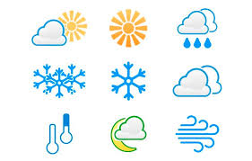

AEROPUERTOS INTERNACIONALES
Tegucigalpa (TGU):
Aeropuerto Internacional Toncontín
San Pedro Sula (SAP):
Aeropuerto Internacional Ramón Villeda Morales
Ceiba (LCB):
Aeropuerto Internacional Golosón
Roatán, Islas de la Bahía (RTB):
Aeropuerto Internacional Juan Manuel Gálvez
Tasa de Cambio

La moneda oficial de Honduras es el Lempira (L). Su nombre conmemora al Cacique Lempira, un indio líder de la etnia lenca que defendió su territorio durante la época de la conquista. El cambio oficial lo fija cada día el Banco Central de Honduras. Puedes consultarlo en este enlace: www.bch.hn Puedes cambiar dólares y euros, en menor medida, en algunos comercios (bancos y hoteles reciben ambas divisas). Puedes usar tus tarjetas de crédito y débito Visa, Master Card y American Express en muchos lugares, y hay redes de cajeros con bastante cobertura a nivel nacional.
Clima
El clima de Honduras cuenta con una temperatura privilegiada a lo largo del año, en torno a una media de 25 grados centígrados. Sin embargo, solamente tiene dos estaciones definidas: la seca, que inicia en el mes de noviembre y finaliza entre abril y mayo, y la lluviosa, que se centraliza en los meses de mayo, junio, julio, septiembre y octubre.
Ubicacion

Honduras tiene una ubicación privilegiada: es el corazón de Centroamérica. Al norte tiene el Mar Caribe, con extensas playas y la segunda barrera de arrecife coralina más grande del mundo. Al sur tiene el Océano Pacífico, con un golfo de arena negra que abraza aguas tranquilas. Sus países vecinos son Guatemala, El Salvador y Nicaragua. Su territorio mayormente montañoso contribuye a la diversidad de climas y a la rica y extensa flora y fauna que caracterizan a este país tropical.